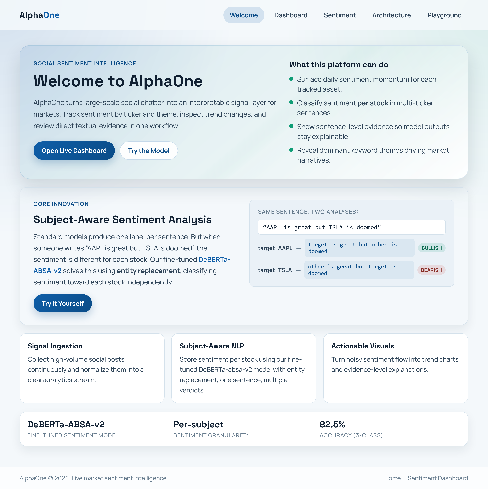
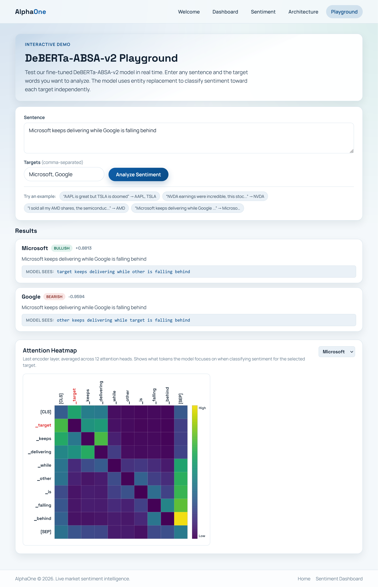
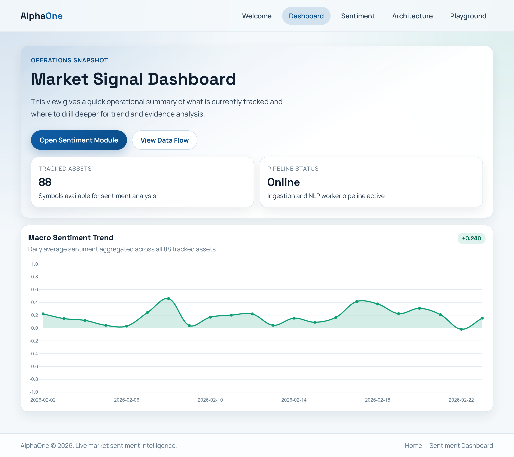
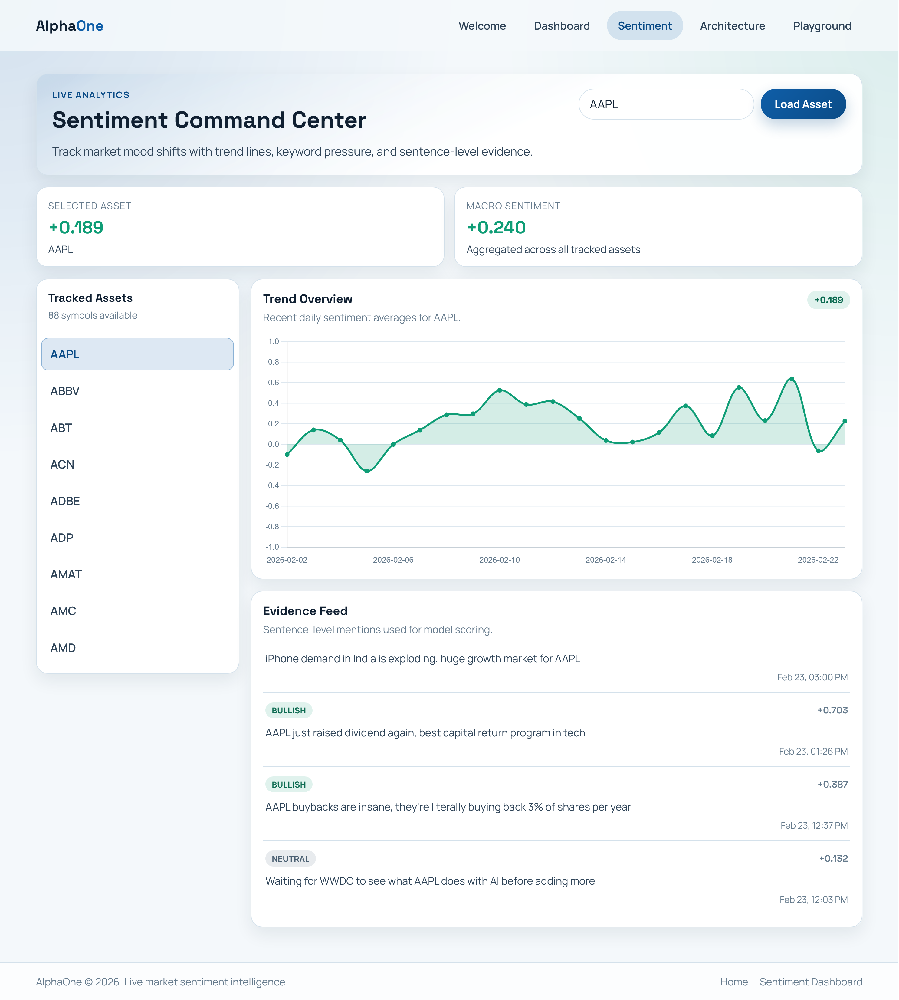
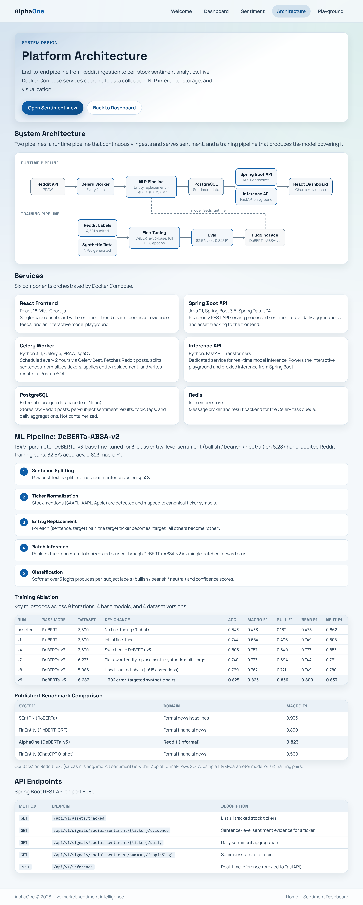

AlphaOne
GitHub Personal project 82.5% accuracy, +13pp over zero-shot GPT-4
Most sentiment models score a whole sentence. But “A crushed earnings while B bled” is bullish and bearish at once — toward different tickers. AlphaOne does target-aware sentiment: it classifies the sentiment expressed toward a specific stock, even in messy multi-entity text, and serves the result as real-time per-ticker trends. The model, DeBERTa-ABSA-v2, was fine-tuned over nine iterations on Reddit's informal language.
01Landing
The model
The landing page states the core idea: DeBERTa-ABSA-v2, trained to classify per-stock sentiment from the kind of informal text where standard, sentence-level models fall apart.

02Playground
Interactive inference
Submit any sentence and target tickers for real-time classification. The playground visualizes entity replacement — what the model actually sees — and renders a 12-head averaged attention heatmap for interpretability.

03Operations
The dashboard
A terminal-style view shows a macro sentiment trend aggregated across all 88 tracked assets, daily averages, and a live snapshot of the ingestion pipeline's status.

04Analytics
Per-ticker sentiment
Drill into any stock to see its sentiment trend over time, summary statistics, and a sentence-level evidence feed showing exactly which Reddit posts drove each classification.

05Architecture
Six services
The full data flow across six containerized services: a React frontend, a Spring Boot API, Celery workers, a FastAPI inference server, a Redis broker, and PostgreSQL — orchestrated with Docker Compose.
